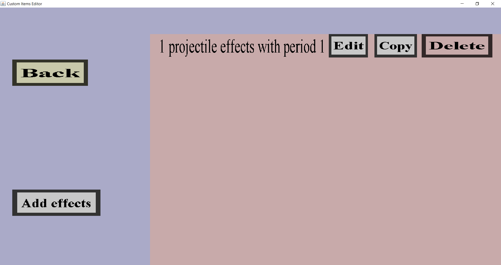

The effect wave overview can be used to manage a list of projectile effect waves.
Those waves can be used to periodically perform projectile effects.
If you are managing a list with a single wave with period 1 and a single projectile effect,
it should look like this:

There should be a 'Back' button and an 'Add effects' button.
Additionally, there should be an 'Edit' button, 'Copy' button and a 'Delete' button for each
effect wave that is currently on the list of waves.
-
The 'Back' button will take you back to the projectile edit menu
you came from. This will not discard any changes.
-
The 'Add effects' button will take you to the effect wave edit menu,
where you can configure a new projectile effect wave to add to this effect wave list.
-
The 'Edit' button will take you to the effect wave edit menu where
you can modify the corresponding effect wave.
-
The 'Copy' will also take you to the effect wave edit menu, where all
fields will have the same values as the corresponding effect wave you are copying.
You can make changes in that menu, but you don't have to. Clicking on the 'Create' button
in that menu will add the copied wave to this effect wave list. Making changes in that menu will
not have any effect on the effect wave you are copying, but it will affect the copy of the
wave you are about to add.
-
The 'Delete' button will remove the corresponding projectile effect wave from this list of
effect waves.